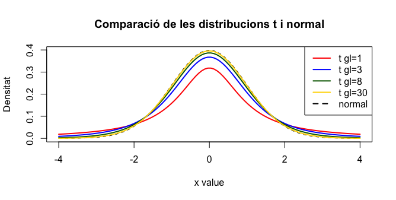

Mètodes d'Investigació Criminològica Avançada
Sessió 2: Anàlisi quantitatiu
inferència bàsica
Enquestas de Victimització
Que és el barri més perillós?
- Ciutat Vella: 30.2% d'entrevistats (\(n=400\)) han estat victimes d'un o més fets que han considerat delictius durant l'any anterior
- Quin percentatge de la població de Ciutat Vella podem inferir de aixo?
- Quin és l'interval de confiança del 95%?
Estimació Puntual
$$\hat{\theta} = \bar{x}$$Interval de confiança
$$IC_{100\%-\alpha} = \hat{\theta} \pm z_{\alpha}\sqrt{\frac{\hat{\theta}(1-\hat{\theta})}{n}}$$$$IC_{95\%} = \left(.257, .347\right)$$
- Sant Marti: 26.6% d'entrevistats (\(n=400\)) han estat victimes d'un o més fets que han considerat delictius durant l'any anterior
- Quin percentatge de la població de Sant Marti podem inferir de aixo?
- Quin és l'interval de confiança del 95%?
$$IC_{95\%} = \left(.223, .309\right)$$
| Barri | \(IC_{95\%}\) |
|---|---|
| Ciutat Vella | (.257, .347) |
| Sant Marti | (.223, .309) |
Que és el barri més perillós?
Pots formular una hipòtesi?
Hipòtesi simple:
$$H_0: \hat{\theta}_{\textrm{cv}} - \hat{\theta}_{\textrm{sm}} = 0$$$$H_a: \hat{\theta}_{\textrm{cv}} - \hat{\theta}_{\textrm{sm}} \neq 0$$
Hipòtesi unilateral:
$$H_0: \hat{\theta}_{\textrm{cv}} - \hat{\theta}_{\textrm{sm}} \leq 0$$$$H_a: \hat{\theta}_{\textrm{cv}} - \hat{\theta}_{\textrm{sm}} > 0$$
Interval de confiança de la diferència
$$IC_{100\%-\alpha} = (\hat{\theta}_{\textrm{cv}} - \hat{\theta}_{\textrm{sm}}) \pm z_{\alpha}\sqrt{\frac{\hat{\theta}_{\textrm{cv}}(1-\hat{\theta}_{\textrm{cv}})}{n_{\textrm{cv}}} + \frac{\hat{\theta}_{\textrm{sm}}(1-\hat{\theta}_{\textrm{sm}})}{n_{\textrm{sm}}}}$$$$IC_{95\%} = (-.026, .098)$$
Tests d'Hipòtesi
$$z = \frac{\hat{\theta}_{\textrm{cv}} - \hat{\theta}_{\textrm{sm}}} { \sqrt{\hat{ \theta }\left(1 - \hat{ \theta }\right)\left(\frac{1}{n_{\textrm{cv}}} + \frac{1}{n_{\textrm{sm}} } \right) } } $$$$ \hat{ \theta } = \frac{x_{\textrm{cv}} + x_{\textrm{sm}}}{n_{\textrm{cv}} + n_{\textrm{sm}}}$$
La mitjana d'una variable contínua
per exemple, l'alçada mitjana
Estimació Puntual
$$\hat{\mu} = \bar{y}$$Interval de confiança
$$IC_{100\%-\alpha} = \bar{y} \pm t_\alpha\frac{s}{\sqrt{n}}$$Per què funciona?
- Màgia?
- Teorema del límit central?
- Llei dels grans nombres?
Teorema del límit central
Llei dels grans nombres
Distribució t de Student

Distribució t de Student
Distribució t de Student
- graus de llibertat: \(n - 1 \)
Demostració: Distribució de mostreig
R ScriptExercici: Biometria dels estudiants
R ScriptDataset
Regressió
L'equació de predicció
$$\hat{y} = a + bx$$Regressió lineal simple
$$b = \frac{\sum\left(x - \bar{x}\right)\left(y - \bar{y}\right)}{\sum\left(x-\bar{x}\right)^2}$$$$a = \bar{y} - b\bar{x}$$
Exercici: Biometria dels estudiants
R ScriptDataset